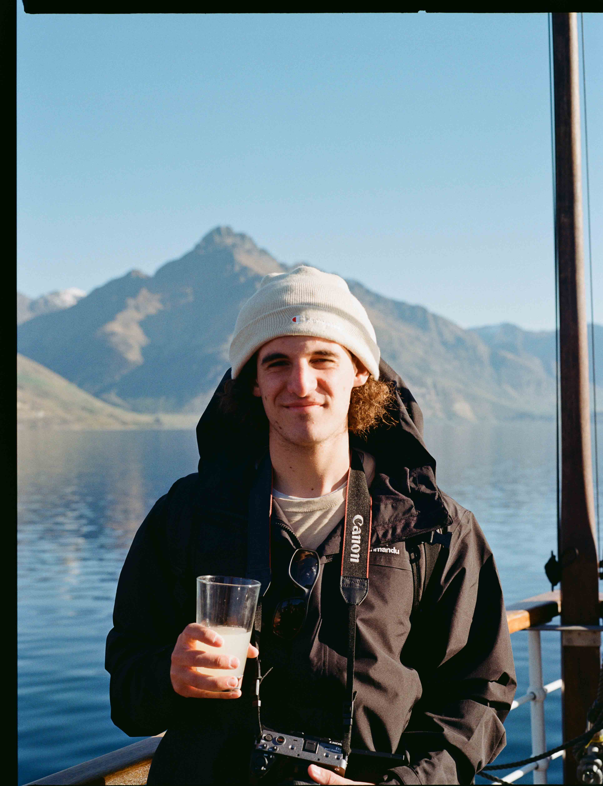

Stories shot on location — sport, celebration, and the moments in between. Based in Perth, working anywhere the light is good.
SCROLL

00 · About
Perth-based filmmaker
I'm Connor, a Perth-based filmmaker. I have a Bachelor of Film from SAE University and years of experience working as a photographer, videographer and in marketing. I excel at finding and capturing the unique stories behind everything I shoot, creating memorable films for audiences and impactful content for potential clients. Whether I'm capturing your personal story, or generating promotional material for your business, I always deliver high quality, value-driven results.